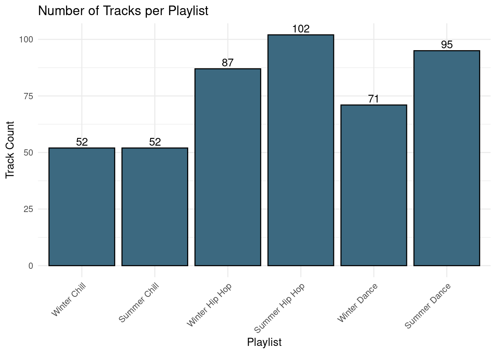
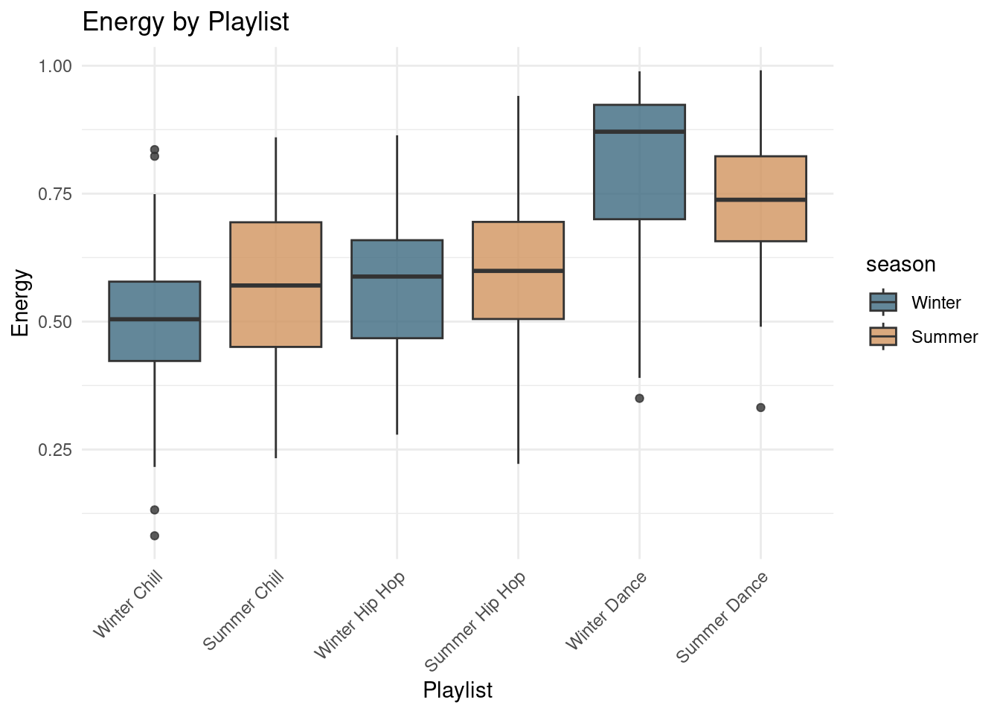
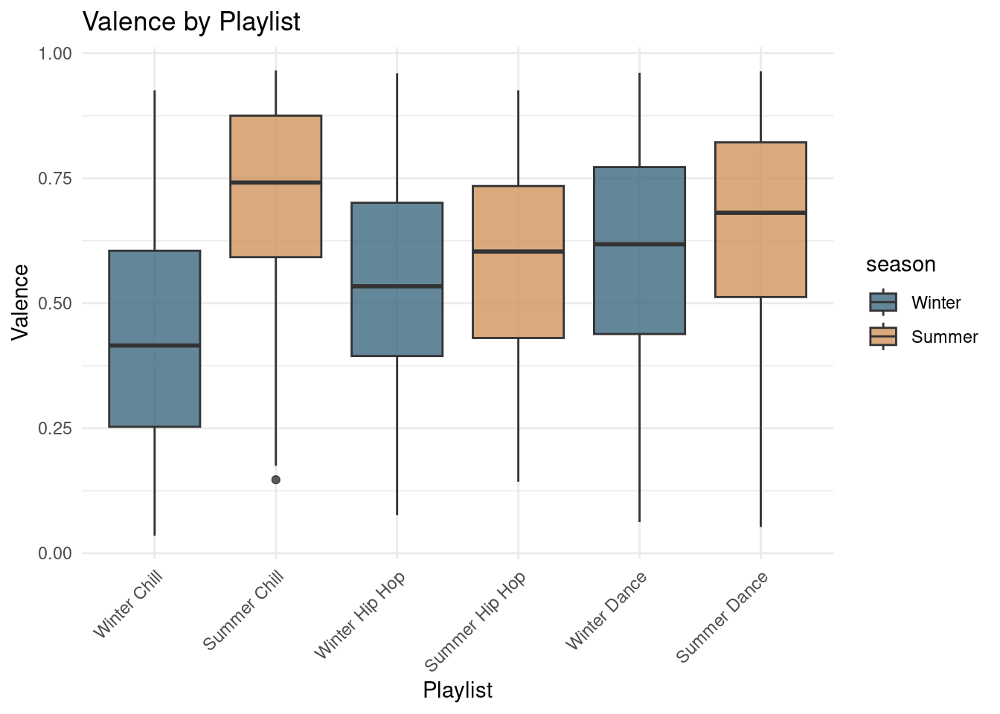
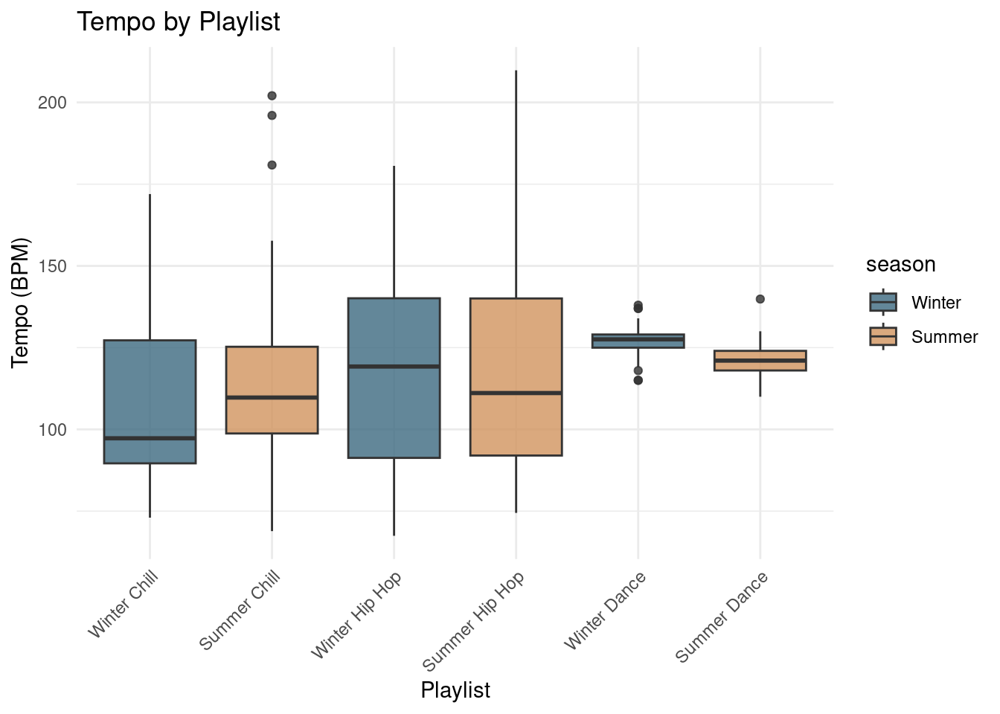
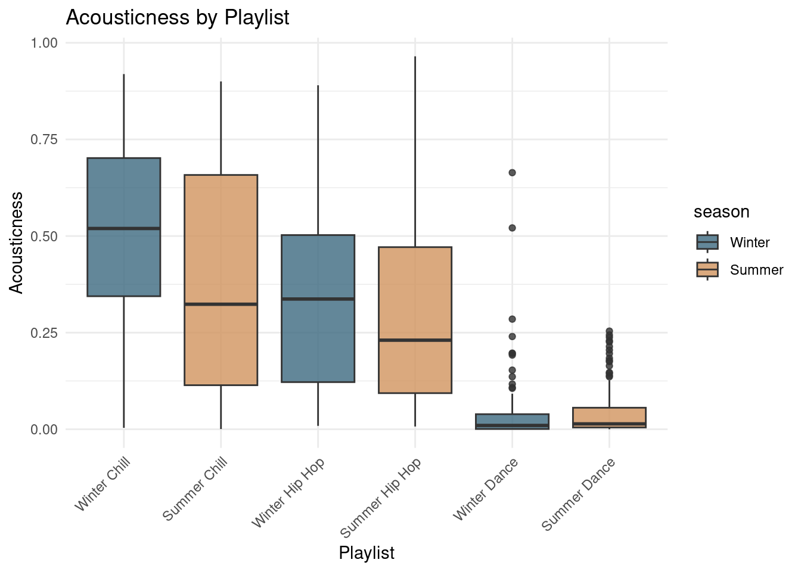
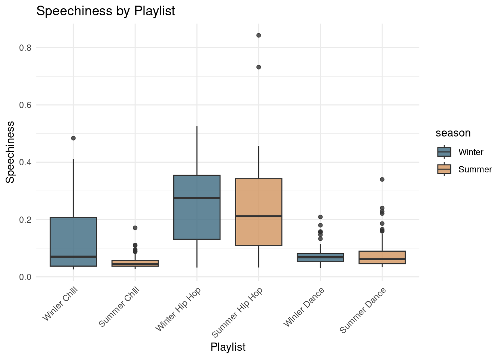
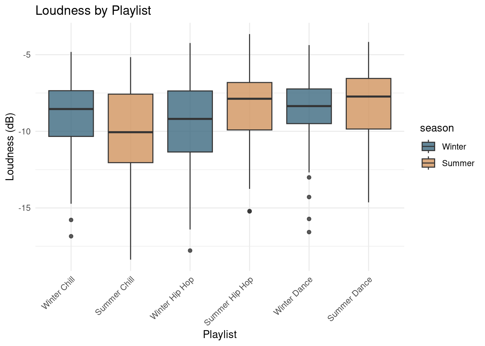

Corpus Exploration
Introduction
In this page, I provide a first general inspection of my corpus. The corpus consists of six playlists divided by both season and genre: summer and winter playlists for dance, hip hop, and chill music. The goal of this first exploration is not yet to draw detailed conclusions, but rather to get a clear overview of the corpus and examine a few broad patterns in the Exportify variables.
Corpus size
Before looking at musical features, it is useful to first inspect the size of each playlist. This provides a basic overview of how the corpus is distributed across the six categories.
Musical features
After looking at the overall size of the corpus, I now turn to a number of Spotify musical features. These variables give a broad first impression of aspects such as energy, mood, acoustic character and more. Although they simplify complex musical qualities, they are useful for exploring how the six playlists may differ from one another and for identifying broader patterns across season and genre. I use boxplots here rather than violin plots because they provide a clearer first overview of the distributions. They make it easier to compare medians, spread, and outliers across playlists, which is especially helpful in an exploratory analysis like this.
Energy
Energy gives a first impression of the overall intensity of the tracks in each playlist. This represents a perceptual measure of intensity and activity. Typically, energetic tracks feel fast, loud, and noisy.

Energy is clearly highest in the dance playlists, which makes sense because dance music is generally built around stronger rhythmic drive, louder production, and a more intense overall sound than chill or hip hop. Within dance, winter dance stands out as especially energetic compared to summer dance. A possible explanation is that my winter dance playlist contains more fast-paced, high-intensity tracks, whereas my summer dance playlist leans slightly more toward laidback or “sunshine” dance music. This is something we could look into. In the chill and hip hop playlists, summer appears to have slightly higher energy than winter, although these differences are fairly small. Finally, for the summer chill playlist the distribution seems to be more dispersed than for winter chill, which could suggest that it includes a broader mix of track types. That would be interesting to examine more closely later on. On top of that, I see some serious outliers in the winter chill playlist, which could be cool to look into in our feature-analysis as well.
Valence
Valence is Spotify’s estimate of how positive or uplifting a track sounds. Although this is a simplified variable, it is useful for gaining a first overview of the mood profile of the corpus.

Valence seems to be higher in the summer playlists than in the winter playlists for all three genres. In other words, the summer playlists generally appear more positive or uplifting. This difference is especially noticeable in the chill playlists, which surprises me a bit, since I would have expected the seasonal gap to be more comparable across genres. Hip hop and dance show the same overall trend, but a little less strongly.
Tempo

Tempo shows a somewhat more mixed pattern than energy or valence. The dance playlists seem the most consistent, with both winter and summer dance concentrated around a fairly narrow BPM range, and winter dance only slightly higher than summer dance. This is to be expected tough, as house/dance music tends to be centered around 125 bpm. Something that does interest me is the fact that winter dance has a sligtly higher tempo, as this correlates with the idea that my winter dance playlist contains more fast-paced, high energy songs than my summer dance playlist. In contrast, the chill and the hip hop playlists show much more spread and don’t differ much between seasons.
Something that does catch my eye though, are the outliers in the summer chill playlist and the relatively high tempo in the upper quadrant of the summer hip-hop playlist. Perhaps these could be tempo’s that are misinterpreted as double time. This is something we can definitly look into in the feature class analysis.
Acousticness
Acousticness is Spotify’s estimate of how acoustic a track sounds. Higher values suggest a more acoustic or less synthetic sound world.

The main thing that stands out is the lack of acousticness for dance music. This makes sense though, as dance music is typically built around electronic production and synthetic sounds, so it would be expected to have low acousticness. The chill and hip hop playlists show more variation in acousticness, with some tracks having higher values that suggest a more acoustic sound world. This could be due to the presence of more organic instrumentation or production styles in those genres.
What also stands out is the presence of several outliers in the winter dance playlist. Most of that playlist has extremely low acousticness, so an outlier around 0.65 is quite striking. That could point to a track that differs strongly from the rest of the playlist, perhaps because it contains unusually acoustic instrumentation or simply falls outside the general sound world of the winter dance selection.
Speechiness
Speechiness measures how speech-like a track is. This is particularly relevant for this corpus because hip hop tracks may stand out more strongly on this variable than chill or dance tracks.

Speechiness shows a clear genre pattern overall, with the hip hop playlists standing out as the most speech-like. That makes sense, since hip hop typically contains more rapped or spoken vocal delivery than chill or dance music. At the same time, the plot also suggests that the boundaries between my playlists are not completely clean. Summer chill and the two dance playlists look fairly similar, with relatively low speechiness and only a few higher outliers. In contrast, winter chill looks closer to the hip hop playlists, with a higher spread and a number of tracks reaching much more speech-like values.
This could suggest that my summer chill playlist contains more dance-like songs, while my winter chill playlist may lean a bit more toward hip hop-like material. So although speechiness mostly behaves as expected, it also hints that the chill playlists may partly overlap with different neighboring genres depending on the season.
Loudness

Loudness appears to vary less across the playlists than many of the other Spotify features. The distributions are fairly similar overall, with only modest differences in median and spread. A likely explanation is that many tracks on Spotify are mastered according to similar modern production standards, which tend to keep perceived loudness relatively high across genres. As a result, loudness may be less informative here for distinguishing between playlists than features such as energy, valence, or acousticness.